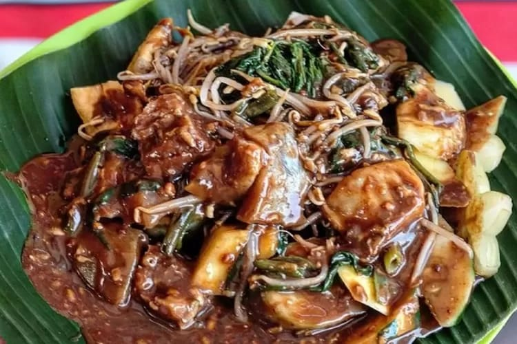
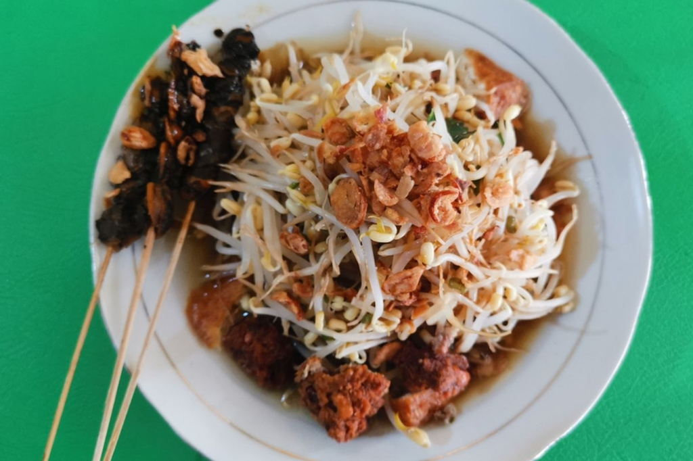
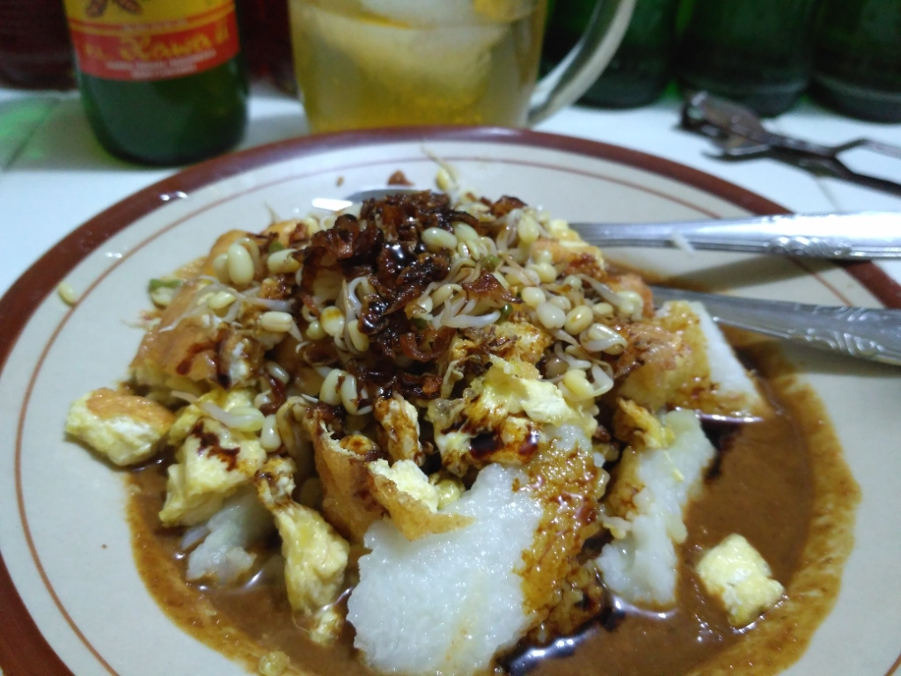

Rujak Cingur
Surabaya's quintessential culinary masterpiece. Combines sliced cow muzzle (cingur), tofu, tempeh, lontong, and fresh blanched vegetables richly smothered in authentic black shrimp paste (petis udang) and peanut dressing.

Surabaya's quintessential culinary masterpiece. Combines sliced cow muzzle (cingur), tofu, tempeh, lontong, and fresh blanched vegetables richly smothered in authentic black shrimp paste (petis udang) and peanut dressing.

An iconic street dish loaded with sliced lontong, abundant fresh bean sprouts, fried tofu, and savory lentho (crispy fried bean patties), flooded in warm garlic clam broth with spicy petis sambal and sate kerang.

Crispy fried tofu and egg omelet snipped with scissors over lontong, potatoes, and bean sprouts, drenched in thick, savory petis-peanut gravy and topped with kerupuk and fried shallots.